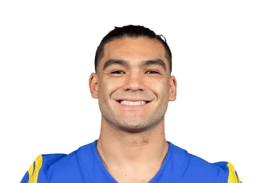

⭐ Player Focus and Bio
Josh Allen (QB - Buffalo Bills)
Allen is regarded as one of the greatest dual-threat quarterbacks in the game, known for his immense arm strength and ability to make plays outside the pocket with his legs. Since being drafted 7th overall in 2018, he has developed into a consistent MVP candidate, setting numerous franchise records and leading the Bills to multiple playoff appearances.
- Games Played: 13
- Passing Yards: 3,083
- Passing Touchdowns: 22
- Rushing Touchdowns: 10
- Advanced Stat Focus: Total EPA (Expected Points Added) - Ranks Top 5 among QBs in 2025.
Puka Nacua (WR - Los Angeles Rams)

A former 5th-round pick who shattered rookie expectations and records in his debut season. Nacua is a high-volume, highly efficient receiver known for his exceptional route running, strong hands, and league-leading ability to secure contested catches. He quickly established himself as a top wideout in the league.
- Games Played: 12
- Receptions / Yards / TDs: 93 Receptions / 1,186 Yards / 6 TDs
- Target Share: 27.3% of team targets (Top 10)
- Contested Catches: 23 (Leads the NFL)
- Advanced Stat Focus: PFF Receiving Grade (94.6) - Currently the highest-graded WR in the NFL.
DK Metcalf (WR - Pittsburgh Steelers)
Metcalf is one of the NFL's premier physical specimens, combining elite size and speed to create matchup nightmares for cornerbacks. Known for his game-breaking deep speed and contested catch ability, he remains a consistent 1,000-yard receiver. He was recently traded to the Steelers in 2025 after six seasons in Seattle.
- Games Played: 13
- Receptions / Yards / TDs: 52 Receptions / 753 Yards / 5 TDs
- Yards Per Reception (YPR): 14.5 (Highlights his big-play ability)
- Longest Reception: 80 yards (Season High)
- Advanced Stat Focus: Average Depth of Target (ADOT) - His high ADOT reflects his role as a primary deep threat.
Drake London (WR - Atlanta Falcons)
The first wide receiver selected in the 2022 Draft, London is a towering target with a massive catch radius and excellent body control. He consistently commands one of the highest target shares in the NFL, demonstrating his importance to the Falcons' passing attack and his ability to convert volume into efficient production.
- Games Played: 9
- Receptions / Yards / TDs: 60 Receptions / 810 Yards / 6 TDs
- Target Share: A massive 33.0% target share in his games (NFL-leading rate).
- Yards Per Route Run (YPRR): Ranks top 5 among all WRs at 2.63.
- Advanced Stat Focus: Per-Game Production - Averaging 90.0 receiving yards per outing this season.